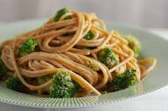

Fideos al pesto

Descripcion
Maravilla sabrosa y economica para salir del apuro en un dia atareado de nuestra vida cotidiana.
Ingredientes
- Fideos
- Ajo, perejil y aceite (para el pesto)
- Sal
- Queso rallado
Pasos
- Poner en agua hirviendo los Fideos.
- mezclar perejil y ajo con un poco de aceite para formar el Pesto.
- Sacar los fideos y juntarlo con la mezcla que acabamos de preparar.
- Llenarlos de queso y listo, servir.
Return | Home